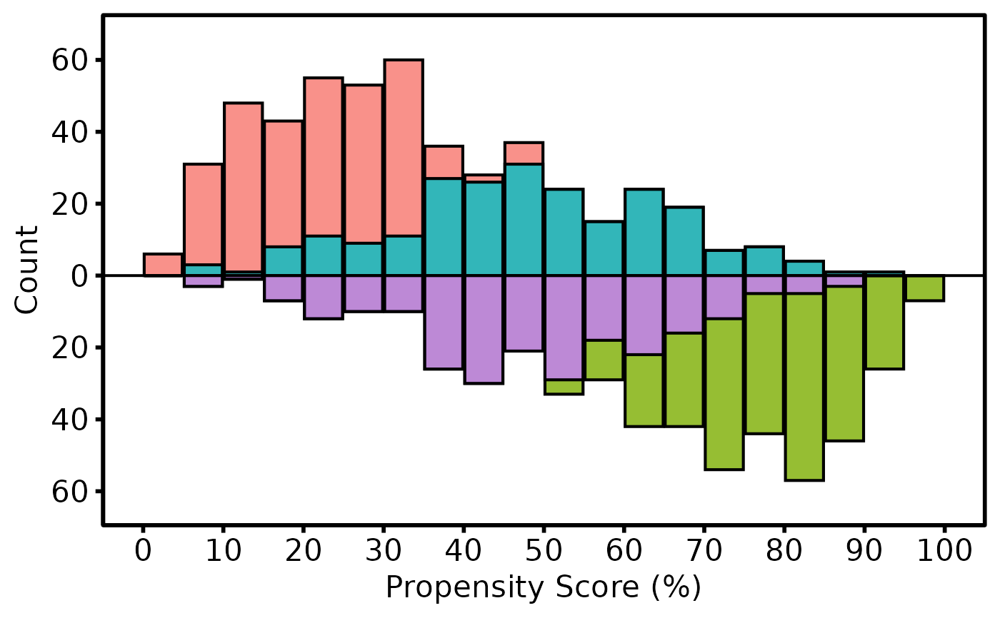

Validates and assembles propensity-score distributions for a mirrored
histogram comparing a treated group (bars above the axis) and a control
group (bars below the axis), with optional matched and unmatched shading.
Returns an hv_mirror_hist object; call plot.hv_mirror_hist
on the result to obtain a bare ggplot2 object.
Arguments
- data
A data frame with one row per patient.
- score_col
Name of the propensity-score column (0–1 scale before multiplier is applied). Default
"prob_t".- group_col
Name of the binary group-indicator column. Default
"tavr".- match_col
Name of the binary match-indicator column (1 = matched). Default
"match".- group_levels
Length-2 vector of the two values in
group_col(control first, treated second). Defaultc(0, 1).- group_labels
Length-2 character vector of display labels corresponding to
group_levels. Defaultc("SAVR", "TF-TAVR").- matched_value
Value in
match_colthat flags a matched patient. Default1.- score_multiplier
Scalar applied to
score_colto convert to the 0–100 display scale. Default100.- binwidth
Histogram bin width on the 0–100 scale. Default
5.- weight_col
Optional name of an IPTW weight column. When supplied, bar heights reflect weighted counts instead of raw counts.
Value
An object of class c("hv_mirror_hist", "hv_data"); call
plot() on the result to render the figure — see
plot.hv_mirror_hist. The list contains:
$dataTidy data frame of histogram bar coordinates for
plot.hv_mirror_hist.$metaNamed list:
score_col,group_col,match_col,group_labels,binwidth,lower,upper,y_breaks,n_obs,n_dropped.$tablesNamed list with two elements:
diagnosticsA named list of diagnostic summaries. Always contains
n_input,n_analyzed,n_dropped_missing_or_other_group,group_counts_before(table),score_summary_before(byobject), andsmd_before(numeric SMD). In binary-match mode, additionally containsgroup_counts_matched,matched_rate_by_group,score_summary_matched, andsmd_matched. In weighted IPTW mode, additionally containseffective_n_by_groupandsmd_weighted.workingThe per-patient data frame after score rescaling and complete-case filtering, used for custom downstream diagnostics.
See also
plot.hv_mirror_hist to render as a ggplot2 figure,
hv_theme for the publication theme,
sample_mirror_histogram_data for example data.
Other Propensity Score & Matching:
plot.hv_mirror_hist()
Examples
dta <- sample_mirror_histogram_data(n = 500, separation = 1.5)
# 1. Build data object
mh <- hv_mirror_hist(dta)
#> mirror_histogram diagnostics: n=1000 dropped=0 [see $tables$diagnostics]
mh # print diagnostics summary
#> <hv_mirror_hist>
#> Groups : SAVR (control) vs TF-TAVR (treated)
#> Score col : prob_t
#> Match col : match
#> N obs : 1000 (dropped: 0)
#> Bin width : 5
#> Y range : [-63, 66]
#> $tables : diagnostics, working
mh$tables$diagnostics # full diagnostics list
#> $n_input
#> [1] 1000
#>
#> $n_analyzed
#> [1] 1000
#>
#> $n_dropped_missing_or_other_group
#> [1] 0
#>
#> $group_counts_before
#>
#> 0 1
#> 500 500
#>
#> $score_summary_before
#> working$group: 0
#> Min. 1st Qu. Median Mean 3rd Qu. Max.
#> 2.313 19.614 31.260 34.205 47.144 90.167
#> ------------------------------------------------------------
#> working$group: 1
#> Min. 1st Qu. Median Mean 3rd Qu. Max.
#> 6.775 51.385 67.926 64.596 81.283 98.587
#>
#> $smd_before
#> [1] 1.565275
#>
#> $group_counts_matched
#>
#> 0 1
#> 230 230
#>
#> $matched_rate_by_group
#> 0 1
#> 0.46 0.46
#>
#> $score_summary_matched
#> working$group[matched_idx]: 0
#> Min. 1st Qu. Median Mean 3rd Qu. Max.
#> 6.904 38.323 48.337 48.565 61.152 90.167
#> ------------------------------------------------------------
#> working$group[matched_idx]: 1
#> Min. 1st Qu. Median Mean 3rd Qu. Max.
#> 6.775 38.321 48.425 48.872 61.136 89.236
#>
#> $smd_matched
#> [1] 0.01837958
#>
# 2. Bare plot -- undecorated ggplot returned by plot.hv_mirror_hist
p <- plot(mh)
# 3. Decorate: axis labels and theme
p +
ggplot2::labs(x = "Propensity Score (%)", y = "Count") +
hv_theme("poster")
